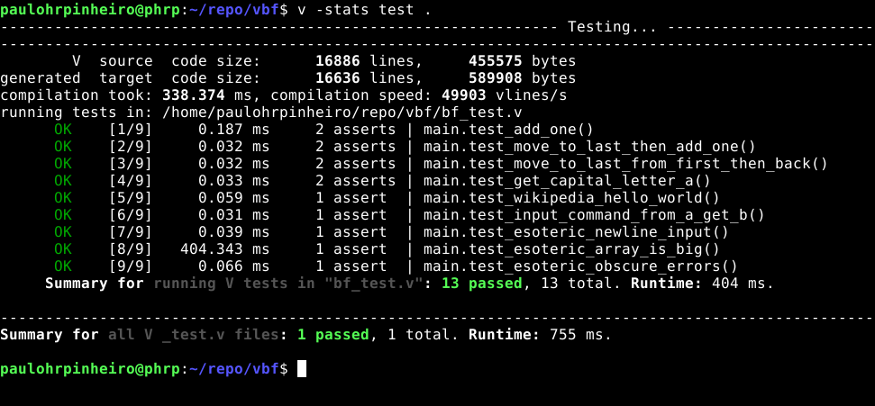

Um Interpretador Brainfuck em Linguagem de programação V - Sprint II
Seguindo a saga do interpretador Brainfuck em linguagem de programação V, agora na Sprint II

Testes continuam OK!
Domingão gostoso
Depois de uma bela torta de carne moída com trigo para quibe, temperada com muita hortelã, feita em conjunto com minha filha 01, voltei ao trabalho iniciado na semana passada ao som de Oscar Peterson:
https://open.spotify.com/playlist/37i9dQZF1E4vDe4N41iuOq?si=-pzXhs0-T_qAnRmgKWErHQ
Para quem não acompanhou, no texto anterior aceitei o desafio de, em pouco tempo (o site propõe uma hora mas levei mais pois fui por outros caminhos), aprender a linguagem:
https://paulohrpinheiro.xyz/texts/diversos/2021-04-18-brainf_ck-em-linguagem-v.html
O projeto está em:
https://github.com/paulohrpinheiro/vbf
E a tag para as mudanças feitas nesse texto é essa:
https://github.com/paulohrpinheiro/vbf/tree/v_1.0.0
Chega de links, vamos às mudanças dessa sprint.
Implementado o comando de input
Mais fácil do que imaginei, minha solução foi passar um parâmetro string com todas as entradas que o programa usará, e um ponteiro para indicar o uso. Para outras sprint, fica a verificação se o programa tem as entradas em quantidade suficiente antes de ser executado:
fn exec(program string, input string) Result {
mut pos_input := 0
...
E dentro do catch que verifica os comandos:
`,` {
result.memory[pos_memory] = int(input[pos_input])
pos_input += 1
}
O teste que verifica isso:
fn test_input_command_from_a_get_b() {
result := exec(',+.', 'A')
assert result.output == 'B'
}
Como input, passo a string "A", e como programa ",+.", ou seja:
. "," -> leia um dado (nesse caso lerá "A" (e armazenará na posição corrente, zero)
. "+" -> some um ao valor armazenado na posição corrente
. "." -> imprima (nosso retorno será "B")
Opções na linha de comando
Pensei em utilizar o módulo cli mas deu preguiça, e encontrei um muito mais simples, mas óbvio, limitado. Só que resolveu muito bem o meu problema:
https://modules.vlang.io/os.cmdline.html
O tratamento dos argumentos dicou assim:
import os
import os.cmdline
...
if '-h' in os.args || os.args.len < 2 {
show_help()
exit(0)
}
if '-v' in os.args {
show_version()
exit(0)
}
if '-l' in os.args {
show_license()
exit(0)
}
mut input := cmdline.option(os.args, '-i', '')
Em os.args temos todos os parâmetros da linha de comando, e na última linha desse excerto pegamos um parâmetro, que se não for informado, terá um valor padrão (são os valores para o input). Esquema simples.
Uma coisa legal em V é a interpolação de variáveis, como nessa função:
fn show_version() {
println('$my_name version: $my_version')
exit(0)
}
Eu falei "variáveis", mas nesse caso são constantes que defini mais acima, e funcionam como tais:
const (
memory_len = 30_000
my_name = 'vbf'
my_version = '1.0.0'
)
Mais testes!
Como se pode ver na imagem, ou, se baixando o código e rodando o comando v -stats test ., ou para uma saída mais simples:
$ v test .
------------------------------- Testing... -----------------------------
OK 722.536 ms bf_test.v
------------------------------------------------------------------------
Summary for all V _test.v files: 1 passed, 1 total. Runtime: 723 ms.
Como os testes que fiz foram muitos simples, peguei um arquivo de testes em um dos sites dedicados à Brainfuck:
http://esoteric.sange.fi/brainfuck
Dois testes simplesmente travaram minha máquina imediatamente quando os coloquei para rodar:
+[<+++++++++++++++++++++++++++++++++.]
e
+[>+++++++++++++++++++++++++++++++++.]
Temos aí um bom trabalho de investigação a ser feito, mas eu não queria ficar travado em meu objetivo principal, estudar V.
Na linha de comando
Para compilar:
v .
Para testar:
v test .
Para compilar com mais informações:
v -stats test .
Executando com -h:
$ ./vbf -h
Brainfuck interpreter in V program language (https://vlang.io)
https://github.com/paulohrpinheiro/vbf
Usage: vbf PROGRAM [OPTION]
-h this message help
-v show version
-l show license
-i input data for "," command
Executando com -v:
$ ./vbf -v
vbf version: 1.0.0
Executando -l:
$ ./vbf -l
MIT License
Copyright (c) 2021 Paulo Henrique Rodrigues Pinheiro
Permission is hereby granted, free of charge, to any person obtaining a copy
of this software and associated documentation files (the "Software"), to deal
in the Software without restriction, including without limitation the rights
to use, copy, modify, merge, publish, distribute, sublicense, and/or sell
copies of the Software, and to permit persons to whom the Software is
furnished to do so, subject to the following conditions:
The above copyright notice and this permission notice shall be included in all
copies or substantial portions of the Software.
THE SOFTWARE IS PROVIDED "AS IS", WITHOUT WARRANTY OF ANY KIND, EXPRESS OR
IMPLIED, INCLUDING BUT NOT LIMITED TO THE WARRANTIES OF MERCHANTABILITY,
FITNESS FOR A PARTICULAR PURPOSE AND NONINFRINGEMENT. IN NO EVENT SHALL THE
AUTHORS OR COPYRIGHT HOLDERS BE LIABLE FOR ANY CLAIM, DAMAGES OR OTHER
LIABILITY, WHETHER IN AN ACTION OF CONTRACT, TORT OR OTHERWISE, ARISING FROM,
OUT OF OR IN CONNECTION WITH THE SOFTWARE OR THE USE OR OTHER DEALINGS IN THE
SOFTWARE.
Executando um programa:
$ ./vbf ,+++. -i A
D
Futuro imediato
Agora resta fazer as verificações de balanceamento de colchetes, o teste para coerência entre dados de entrada e comandos de input e descobrir o problema no teste que congela a máquina.